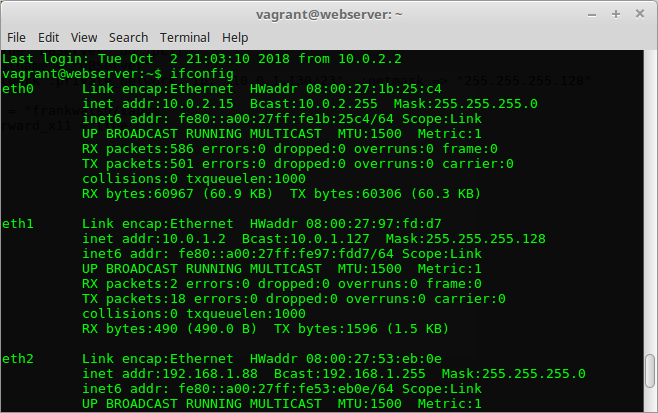
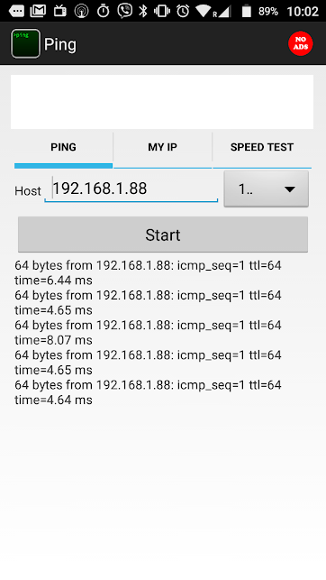

-
Private and Public IP Networks
Use Vagrant to set up a simulated provate/public network topology.
-
Objectives

In this lab, you will:
- Review a simple multi-machine network consisting of machines on different subnets
- Create a private network using Vagrant
- Create a bridged network interface using Vagrant
- Test and validate the connectivity between different subnets.
Required Resources
- 2 devices on the same LAN with Internet Access (Laptop and Smart Phone)
- VirtualBox/Vagrant
- Complete last week3 lab - Vagrant and Virtualisation
-
Set up Virtual Network
- Create a lab directory called cs-nets-lab4.
- Open a terminal window in the directory and run
vagrant initto initialise it as a vagrant project - Replace the contents of the Vagrantfile with the code from last weeks lab and modify machine names and network configuration according to the following code:
VAGRANTFILE_API_VERSION = "2" Vagrant.configure(VAGRANTFILE_API_VERSION) do |config| config.vm.define "WebServer" do |pc0| pc0.vm.hostname = "WebServer" pc0.vm.network :private_network, ip: "10.0.1.2", :netmask => "255.255.255.0" end config.vm.define "DBServer1" do |pc1| pc1.vm.hostname = "DBServer" pc1.vm.network :private_network, ip: "10.0.1.3", :netmask => "255.255.255.0" end config.vm.box = "frankwalsh/labvm" config.ssh.forward_x11 = true end- The Vagrant file shows network configuration in dot decimal form. Calculate the binary representation of the DBServer's IP address and network mask.
- Calculate the network address of the private network in prefix format (e.g. 121.145.2.0/26)
- Start the virtual environment in the usual way:
The Vagrantfile will create the following network topology consisting of two linux machines connected using a private network (10.0.1.0/24).$ vagrant up

- Check if you can "see" the new VMs from your host. From your host, Ping both using the IP addresses you assigned to them in your Vagrantfile.
``` ping 10.0.1.2
ping 10.0.1.3 ``` Both should respond successfully as before.
You will now try to interact with these machines from another device on your home network, for example you Smart Phone.
-
Virtual private network
The figure below depicts the networking topology you created in last weeks (week3) lab, including your home router. In his lab you will use this model to explore networking using Vagrant. Although we are doing this lab "virtually", the concepts can be applied in any IP network. The lab assumes that Vagrant is running in the host laptop whose IP address is, for example, 192.168.1.10.
![Topology, Virtual Network]
Accessing the private network
In the previous slide, you pinged both VMs successfully from your host machine. Now try the same from another device on your LAN. This can be and device capable of issuing an ICMP request such as:
1 Mobile Phone 2 Another Laptop/desktop machine 3 Your Raspberry Pi(if you have it up and running)
SmartPhones
Download an app that allows you to ping devices on your LAN. The following are available for free (iPhone app not tested with this lab):
Ping away...
Now find the IP address of the host machine, the machine that is running Virtualbox and hosting your VMs(probably your laptop). - Use a different device on your Home network to ping your host address. You should get a successful response. An example using Ping for android is shown below.

- Now, on your host machine, use vagrant to SSH into your WebServer VM and get the interface configuration as follows:
~~~bash
$ vagrant ssh WebServer
Welcome to Ubuntu 14.04.5 LTS (GNU/Linux 3.13.0-144-generic x86_64)
.
.
.
.
vagrant@webserver:~$ ifconfig
eth0 Link encap:Ethernet HWaddr 08:00:27:1b:25:c4
inet addr:10.0.2.15 Bcast:10.0.2.255 Mask:255.255.255.0 inet6 addr: fe80::a00:27ff:fe1b:25c4/64 Scope:Link UP BROADCAST RUNNING MULTICAST MTU:1500 Metric:1 RX packets:594 errors:0 dropped:0 overruns:0 frame:0 TX packets:495 errors:0 dropped:0 overruns:0 carrier:0 collisions:0 txqueuelen:1000 RX bytes:61789 (61.7 KB) TX bytes:58920 (58.9 KB)
eth1 Link encap:Ethernet HWaddr 08:00:27:97:fd:d7
inet addr:10.0.1.2 Bcast:10.0.1.255 Mask:255.255.255.0 inet6 addr: fe80::a00:27ff:fe97:fdd7/64 Scope:Link UP BROADCAST RUNNING MULTICAST MTU:1500 Metric:1 RX packets:5 errors:0 dropped:0 overruns:0 frame:0 TX packets:18 errors:0 dropped:0 overruns:0 carrier:0 collisions:0 txqueuelen:1000 RX bytes:1225 (1.2 KB) TX bytes:1596 (1.5 KB)lo Link encap:Local Loopback
inet addr:127.0.0.1 Mask:255.0.0.0 inet6 addr: ::1/128 Scope:Host UP LOOPBACK RUNNING MTU:65536 Metric:1 RX packets:16 errors:0 dropped:0 overruns:0 frame:0 TX packets:16 errors:0 dropped:0 overruns:0 carrier:0 collisions:0 txqueuelen:0 RX bytes:1184 (1.1 KB) TX bytes:1184 (1.1 KB) ~~~From the lecture videos, explain what the lo interface is. - Try to ping any of the interfaces on the webserver VM using the same device you used to ping your host. Does it work? Hopefully not! You should see output similar to the folowing

Before going any further, try to explain why you cannot "see" the web server VM outside the host.
- Now, on your host machine, use vagrant to SSH into your WebServer VM and get the interface configuration as follows:
~~~bash
$ vagrant ssh WebServer
Welcome to Ubuntu 14.04.5 LTS (GNU/Linux 3.13.0-144-generic x86_64)
.
.
.
.
vagrant@webserver:~$ ifconfig
eth0 Link encap:Ethernet HWaddr 08:00:27:1b:25:c4
-
Private and public Networks
At the moment it's not possible to access any of your VMs from external devices on your LAN at home. As such, it does not replicate the initial networking topology proposed earlier.
We would like the web server to be accessible from external networks, if only to access web resources. However, we'd like the DBServer to remain isolated and only accessible from the private network. Furthermore, to replicate the real environment, it should not be possible to access external networks or the internet from the DBServer.To allow access to the WebServer, you can add a public Network interface. This will create a bridged network(remember Week 2, virtualisation) such aht athe Web Server will appear like any other host on the LAN.
Update the Vagrantfile to include the public network configuration highlighted below:
VAGRANTFILE_API_VERSION = "2" Vagrant.configure(VAGRANTFILE_API_VERSION) do |config| config.vm.define "WebServer" do |pc0| pc0.vm.hostname = "WebServer" pc0.vm.network :private_network, ip: "10.0.1.2", :netmask => "255.255.255.0" # Public Network (bridged) pc0.vm.network "public_network" end config.vm.define "DBServer1" do |pc1| pc1.vm.hostname = "DBServer" pc1.vm.network :private_network, ip: "10.0.1.3", :netmask => "255.255.255.0" end config.vm.box = "frankwalsh/labvm" config.ssh.forward_x11 = true endDuring the update you will be asked to select the interface on your host machine you wish to use. Make sure to use the interface you're currently using to connect to your LAN and the Internet. Once finished, SSH into pc0 as before and check the interface configuration using
ifconfigagain. You should now have another interface on the machine that is on the same network as your host machine. Effectively you've created a new network interface in softwar that looks to the host system as though the Web Server VM is physically connected to the interface using a network cable. This means that you can connect between the Web Server VM and the rest of your network. Your interface config on the Web Server VM should look something similar to the following: Ping again
Now try to ping the Web Server VM from a device on your LAN using the IP address assigned to the bridged interface(eth2 in the above example). This time it should work.
 However, you still will not be able to ping the DB Server as it is only connected to the private network.To get the VM to act somewhat like a real web server, you can start a simple process that listens on port 80 on the Web Server VM and returns a simple HTML page.
Create a simple HTML page called
index.htmlin the home directory of your Web Server VMvagrant@webserver:~$ echo '<html><head><title>Web Server Test</title></head><body><h1>Hello from your Web Server VM!</h1></body></html>' > index.htmlUsing the
Run a short script at the command line to listen for(-l) a connection on port 80 (-p) and return the index.html page.
vagrant@webserver:~$ while true; do echo -e "HTTP/1.1 200 OK\r\nContent-Type: text/html\r\n\r\n" | cat - index.html | sudo nc -l -p 80; done- Now, from a browser on your host machine(or any other machine on your LAN), make a request to the Web Server by just putting the IP address into the address bar. You should see similar the following:
-
DB Server
The DB server should be isolated from public networks. There should be no routing from external networks to the DB Server. Similarly, there is no need for external access from the DB Server to the internet (perhaps for security reasons).
SSH into the DB Server and try to retrieve the google.ie web page ~~~bash vagrant@dbserver:~$ wget google.ie --2018-10-02 10:09:51-- http://google.ie/ Resolving google.ie (google.ie)... 74.125.90.67, 2a00:1450:400b:803::2003 Connecting to google.ie (google.ie)|74.125.90.67|:80... connected. HTTP request sent, awaiting response... 301 Moved Permanently Location: http://www.google.ie/ [following] --2018-10-02 10:09:51-- http://www.google.ie/ Resolving www.google.ie (www.google.ie)... 74.125.90.67, 2a00:1450:400b:803::2003 Reusing existing connection to google.ie:80. HTTP request sent, awaiting response... 200 OK Length: unspecified [text/html] Saving to: 'index.html.1'
[ <=> ] 11,694 --.-K/s in 0s
2018-10-02 10:09:51 (22.4 MB/s) - 'index.html.1' saved [11694]
As above, the web request for google.ie worked. This is because your DBServer VM is routed to the internet via the default gateway which is on the network used by vagrant to connect to your machine(10.0.2.0/24). To see the ip routing used by your VM, use the ``route`` command: ~~~bash vagrant@dbserver:~$ route Kernel IP routing table Destination Gateway Genmask Flags Metric Ref Use Iface default 10.0.2.2 0.0.0.0 UG 0 0 0 eth0 10.0.1.0 * 255.255.255.0 U 0 0 0 eth1 10.0.2.0 * 255.255.255.0 U 0 0 0 eth0From the routing table you can see that all traffic for 10.0.1.0/24 is routed on interface eth1,traffic for 10.0.2.0/24 is routed to eth0, and all other IP traffic is routed to the default gateway 10.0.2.2(the ip address of the VirtualBox NAT router) on interface eth0. The connection to this router via the 10.0.2.0/24 netowork is required for Vagrant to wirk properly. However, we can remove the default route entry in the routing table. This will prevent any traffic being routed to external public networks and will "simulate" an isolated DB Server. - Remove the default route from the routing table
vagrant@dbserver:~$ sudo ip route del default- Repeat the Google.ie request - it should now fail
vagrant@dbserver:~$ sudo ip route del default vagrant@dbserver:~$ wget google.ie --2018-10-02 10:28:05-- http://google.ie/ Resolving google.ie (google.ie)... 2a00:1450:400b:803::2003, 74.125.90.67 Connecting to google.ie (google.ie)|2a00:1450:400b:803::2003|:80... failed: Network is unreachable. Connecting to google.ie (google.ie)|74.125.90.67|:80... failed: Network is unreachable.